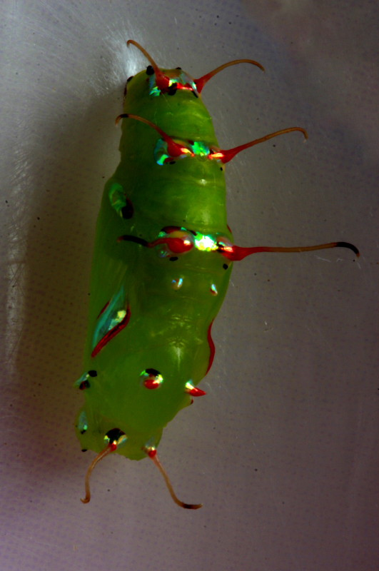

كتاب العلوم — الجزء الأول من المقرر — طبعة ١٤٤٧ / ٢٠٢٥
دورات الحياة
الصف الخامس الابتدائي الوحدة الأولى: تنوع الحياة الفصل الثاني: الآباء والأبناء — الدرس الثاني
إعداد: نايف المطيري
موقع الدرس
أين نحن من الكتاب؟
ص ٦٦
الوحدة الأولى
تنوع الحياة
الفصل الثاني
الآباء والأبناء
الدرس الثاني
دورات الحياة
السؤال الأساسي: كيف تنمو وتتغيَّر المخلوقات الحية في أثناء حياتها؟
أهداف التعلم
ماذا سأتعلم في هذا الدرس؟
أُعرِّف دورة الحياة والتحوُّل.
أُقارن بين التحوُّل الكامل والتحوُّل الناقص.
أُعرِّف اليرقة والعذراء والحورية.
أُفرِّق بين الإخصاب الخارجي والإخصاب الداخلي.
أَصِف ما يحدث للبيوض المخصَّبة، وأُقارن بيوض الحيوانات.
أَصِف تركيب الزهرة ووظيفة كل جزء.
أُوضِّح التلقيح ودورة حياة النبات الزهري.
أُوظِّف مهارة المقارنة.
تمهيد
لنبدأ بسؤال
يرقة تشبه الدودة… تصير فراشة ملوَّنة بأجنحة! كيف يحدث هذا التغيُّر الكبير؟
هذا ما نسميه التحوُّل. في هذا الدرس نتتبَّع دورات حياة الحيوانات والنباتات.
معرفة سابقة
ما أعرفه من قبل
التكاثر الجنسي
من أبوين، ويبدأ بالإخصاب.
مغطَّاة البذور
نباتات زهرية تنتج أزهارًا وثمارًا.
الفقاريات
أسماك · برمائيات · زواحف · طيور · ثدييات.
المفردات
مفردات الدرس
ص ٦٨
التحوُّل
سلسلة من مراحل النمو المميَّزة المختلف بعضها عن بعض.
التحوُّل الكامل
أربع مراحل مميزة، يظهر فيها البالغ مختلفًا تمامًا عمَّا في وقت الفقس.
اليرقة
مرحلة تخرج فيها الفراشة من البيضة منتفخة غير مكتملة النمو.
العذراء
مرحلة يغلَّف فيها المخلوق بشرنقة صلبة.
التحوُّل الناقص
يمرُّ المخلوق فيه بثلاث مراحل فقط، تحدث تدريجيًّا.
الحورية
مرحلة تشبه شكل المخلوق المكتمل النمو لكنها أصغر حجمًا.
الإخصاب الخارجي
اندماج المشيج المذكَّر والمؤنث خارج الجسم.
الإخصاب الداخلي
اندماج المشيج المذكَّر مع المؤنث داخل جسم الأنثى.
السَّداة
الجزء الذكري في الزهرة، وينتهي بالمتك.
الكربلة
الجزء الأنثوي في الزهرة، ويتكوَّن من الميسم والقلم والمبيض.
التلقيح
انتقال حبوب اللقاح من السَّداة إلى الكربلة.
حبوب اللقاح
مسحوق أصفر يحوي خلايا جنسية ذكريَّة.
مهارة القراءة في هذا الدرس: المقارنة (اختلاف · تشابه · اختلاف).
أستكشف — نشاط استقصائي
ما المراحل التي تمرُّ بها دورة حياة الحيوان؟
ص ٦٧ — نشاط الكتاب
الهدف: أعتبر نفسي عضوًا من فريق مهتمٍّ بدراسة دورة حياة الضفادع، وقد جمعت بعض البيانات عن الضفادع التي لاحظتُها. أفسِّر النتائج وأستخدم الصور التي حصلت عليها لأحدِّد الفترة التي تحتاج إليها كل مرحلة من مراحل حياة الضفدع.
ألاحظ. أنظر بتمعُّن إلى المراحل التي تمرُّ بها دورة حياة الضفدع.
أعمل جدولًا أسجِّل فيه التغيُّرات التي تطرأ على تركيب جسم الضفدع خلال كل مرحلة من دورة حياته.
أفسِّر البيانات. أستخدم الصور لتحديد الفترة التي تمرُّ بها كل مرحلة من مراحل دورة حياة الضفدع، وأسجِّل البيانات في الجدول المخصَّص لها.
المرحلة
الوصف
التاريخ
١
بيوض مخصبة
٤ / ١
٢
أبو ذنيبة
٤ / ٥
٣
أبو ذنيبة
٦ / ٢٣
٤
ضفدع غير بالغ
٧ / ٧
٥
ضفدع بالغ (مكتمل النمو)
٧ / ٢١
أستكشف — نشاط استقصائي
أستخلص النتائج
ص ٦٧ — أسئلة الكتاب
٤. ما أقصر مرحلة في دورة حياة الضفدع؟ وما أطول مرحلة؟
سؤال الكتاب — ص ٦٧أقصر مرحلة: مرحلة البيوض المخصبة؛ فمن ٤/١ إلى ٤/٥ = ٤ أيام فقط. أطول مرحلة: مرحلة أبي ذنيبة الأولى؛ فمن ٤/٥ إلى ٦/٢٣ = نحو ٧٩ يومًا. أما من ٦/٢٣ إلى ٧/٧ فـ١٤ يومًا، ومن ٧/٧ إلى ٧/٢١ فـ١٤ يومًا.
٥. أستنتج. متى كان التغيُّر الأكبر للحيوان؟
سؤال الكتاب — ص ٦٧إجابة نموذجية مقترحة: كان التغيُّر الأكبر بين المرحلة ٣ والمرحلة ٤؛ أي عند تحوُّل أبي ذنيبة إلى ضفدع غير بالغ؛ إذ تظهر الأرجل وتختفي الذيل تدريجيًّا، ويتغيَّر التنفُّس من الخياشيم إلى الرئتين، وينتقل من الماء إلى اليابسة.
٦. كيف يختلف الحيوان في المرحلة ٢ عنه في المرحلة ٤؟
سؤال الكتاب — ص ٦٧في المرحلة ٢ يكون أبا ذنيبة: جسمه صغير له ذيل طويل وليس له أرجل، ويعيش في الماء ويتنفَّس بالخياشيم. أما في المرحلة ٤ فيكون ضفدعًا غير بالغ: له أرجل وذيل قصير آخذ في الاختفاء، ويستطيع الخروج إلى اليابسة والتنفُّس بالرئتين.
أستكشف أكثر: كيف تنمو بيضة الضفدع المخصبة إلى أبي ذنيبة؟ أستخدم الإنترنت أو مصادر أخرى في البحث عن صور تمثِّل الأيام الأربعة الأولى من حياة أبي ذنيبة. أناقش التغيرات التي ألاحظها.
الشرح والتفسير
ما دورات حياة الحيوانات؟
ص ٦٨
تمرُّ المخلوقات الحية بدورات حياة.
دورة الحياة سلسلة من مراحل النمو المختلفة التي يمرُّ بها المخلوق الحي، من مرحلة تكوُّنه إلى مرحلة البلوغ (اكتمال النمو).
عندما تبدأ معظم الحيوانات حياتها تستمرُّ في النمو لتصبح أفرادًا بالغة. على سبيل المثال، عندما يفقس صغير الحرباء يزداد حجم جسمه تدريجيًّا حتى يصبح بالغًا، بينما تمرُّ بعض الحيوانات — ومنها البرمائيات والحشرات — بعملية تسمَّى التحوُّل، وهي سلسلة من مراحل النمو المميَّزة المختلف بعضها عن بعض.
والتحوُّل نوعان؛ كامل وناقص (غير الكامل).
الشرح والتفسير
التحوُّل الكامل
ص ٦٨
تدخل بعض الحيوانات — ومنها الفَراش والذُّباب والنَّحل — في عملية التحوُّل الكامل، وهي أربع مراحل مميزة؛ حيث يظهر الحيوان البالغ مختلفًا تمامًا عمَّا في وقت الفقس.
فالفراشة مثلًا تخرج من البيضة على هيئة يرقة منتفخة، غير مكتملة النموِّ، ولا تشبه الفراشة البالغة أبدًا. فهي تشبه الدودة وليس لها أجنحة، وتتغذَّى غالبًا على أغذية مختلفة عن تلك التي تتغذَّى عليها الفراشة البالغة.
الشرح والتفسير
من اليرقة إلى الفراشة
ص ٦٨
بعد الفقس تتغذَّى اليرقة باستمرار، وكلَّما ازداد نموُّها ازداد تمدُّد جلدها الخارجي. المرحلة التالية من دورة الحياة هي مرحلة العذراء، وفيها يغلَّف المخلوق بشرنقة صلبة.
لا تعدُّ العذراء مرحلة سكون، بل إن المخلوق داخل الشرنقة يكون نشطًا جدًّا؛ حيث يتغيَّر تركيب الجسم الداخلي وتظهر الأجنحة، وأجزاء الفم، والأرجل الجديدة، ثم تخرج فراشة مكتملة النموِّ من الشرنقة.
التحوُّل الكامل (الفراشة)
١ البيوض
على الورقة
٢ اليرقة
تشبه الدودةتتغذَّى باستمرار
٣ العذراء
شرنقة صلبةنشاط داخلي كبير
٤ فراشة مكتملة النمو
أجنحة وأجزاء فم وأرجل جديدة
الشرح والتفسير
التحوُّل الناقص (غير الكامل)
ص ٦٩
بعض أنواع الحشرات — ومنها الجرادة واليعسوب والنمل الأبيض — تدخل عملية التحوُّل الناقص، حيث يمرُّ المخلوق بثلاث مراحل فقط — بدلًا من أربع — تحدث تدريجيًّا.
فالجرادة مثلًا تأخذ شكل جسم الحورية بعد الفقس من البيضة مباشرةً، وهي مرحلة تشبه فيها شكل المخلوق المكتمل النموِّ ولكنَّها أصغر حجمًا، وتفتقر إلى الأجنحة أعضاء التكاثر. وقد يمرُّ المخلوق في مرحلة الحورية بعدَّة تغيُّرات.
التحوُّل الناقص (الجرادة)
١ البيوض
في التربة
٢ الحورية
تشبه البالغة لكن أصغربلا أجنحة
٣ جرادة مكتملة النمو
بعد عدَّة انسلاخات
الشرح والتفسير
لماذا تنسلخ الحشرات؟
ص ٦٩
لا تنمو الحشرات تدريجيًّا كالثدييات أو الطيور؛ وذلك بسبب وجود الهيكل الخارجيِّ. لذا فهي تنسلخ من هيكلها الصُّلب مرة واحدة لتعطيَ مساحةً لنموِّ جسمها.
فالجرادة مثلًا تمرُّ بعدَّة انسلاخات قبل أن تصل إلى مرحلة اكتمال النموِّ (البلوغ). في كل مرة تظهر الأجنحة شيئًا فشيئًا إلى أن تصل الجرادة إلى المرحلة النهائية التي تكون بالغةً عندها.
أقرأ الشكل
سؤال الكتاب
ص ٦٩
أيُّ مراحل التحوُّل لا يمرُّ بها التحوُّل الناقص؟ إرشاد: أقارن فيمَ يختلف نوعا التحوُّل في المخطَّط؟
سؤال الكتاب — ص ٦٩لا يمرُّ التحوُّل الناقص بمرحلتَي اليرقة والعذراء؛ فهو ثلاث مراحل فقط: البيوض ← الحورية ← المكتمل النمو. أما التحوُّل الكامل فأربع مراحل: البيوض ← اليرقة ← العذراء ← المكتمل النمو.
أختبر نفسي
أسئلة الكتاب
ص ٦٩
أقارن. فيمَ تختلف مرحلة اليرقة عن مرحلة الفراشة المكتملة النموِّ؟
سؤال الكتاب — ص ٦٩اليرقة منتفخة غير مكتملة النموِّ، لا تشبه الفراشة البالغة أبدًا؛ فهي تشبه الدودة وليس لها أجنحة، وتتغذَّى غالبًا على أغذية مختلفة عن تلك التي تتغذَّى عليها الفراشة البالغة. أما الفراشة المكتملة النموِّ فلها أجنحة وأجزاء فم وأرجل جديدة، وتستطيع التكاثر.
التفكير الناقد. لماذا لا تنمو الجرادة تدريجيًّا كالثدييات والزواحف والطيور؟
سؤال الكتاب — ص ٦٩بسبب وجود الهيكل الخارجي الصُّلب الذي لا يتمدَّد مع نموِّ الجسم. لذا تنسلخ الجرادة من هيكلها الصُّلب لتعطي مساحةً لنموِّ جسمها، وتمرُّ بعدَّة انسلاخات قبل أن تصل إلى مرحلة اكتمال النموِّ.
سؤال تحقُّق
كامل أم ناقص؟
ص ٦٨ — ٦٩
أقرأ العبارة أو اسم الحشرة، ثم أختار نوع التحوُّل.
——
أبدأ التصنيف.
النتيجة: ٠ / ٠
الشرح والتفسير
كيف يحدث الإخصاب في الحيوانات؟
ص ٧٠
يحدث التكاثر الجنسي في الحيوانات عندما تتمُّ عملية الإخصاب التي يحدث فيها اندماج المشيج المذكَّر (الحيوان المنويِّ) مع المشيج المؤنث (البيضة)، فتنتج البيضة المخصَّبة (اللاقحة). والإخصاب نوعان؛ خارجيٌّ وداخليٌّ.
خطوات الإخصاب
١
مشيج مذكَّر + مشيج مؤنث
٢
اندماج المشيجين
٣
نمو اللاقحة (بيضة مخصَّبة)
الشرح والتفسير
الإخصاب الخارجي
ص ٧٠
يحدث الإخصاب الخارجي في بعض المخلوقات الحيَّة، ومنها البرمائيات ومعظم الأسماك؛ حيث تطرح خلاياها الجنسية (الأمشاج المذكَّرة والمؤنثة) في الماء.
فعلى سبيل المثال في أثناء تزاوج ضفادع المستنقعات تطلق الأنثى أمشاجَها في الماء، ثم يطلق الذكر أمشاجه فوق أمشاج الأنثى، ويحدث الإخصاب. يسمَّى الاندماج الذي يحدث بين المشيج المذكَّر والمشيج المؤنث خارج الجسم الإخصاب الخارجيَّ.
الشرح والتفسير
مخاطر الإخصاب الخارجي
ص ٧٠
والإخصاب الخارجي محفوف بالمخاطر؛ حيث تحتوي البرك والبحيرات والأنهار والمحيطات على كميات ضخمة من الماء، وبذلك تقلُّ فرصة التقاء المشيج المذكَّر مع المشيج المؤنث وتخصيبه. وقد تتعرَّض هذه الأمشاج لدرجات حرارة عالية أو للتلوث في الماء.
إذن كيف تنجح هذه المخلوقات في التكاثر في هذه الظروف؟ لقد هدى الله سبحانه وتعالى هذه المخلوقات إلى حماية نسلها؛ وذلك بإطلاق أعداد كبيرة جدًّا من الخلايا الجنسية في وقت واحد؛ لأنه كلَّما كانت الأعداد كبيرةً زادت فرصة حدوث الإخصاب.
ففي العادة تبقى بيضة أو بيضتان من كل ألف بيضة لتنمو وتصل إلى سنِّ البلوغ. ولهذا السبب تُنتج الأسماك والبرمائيات أعدادًا هائلة من البيوض.
الشرح والتفسير
الإخصاب الداخلي
ص ٧١
كيف تتمكَّن الخلايا الجنسية في مخلوقات اليابسة من العيش في الظروف الجافة؟ لقد مكَّن الله تعالى الزواحف والطيور والثدييات من التغلُّب على هذه المشكلة بالإخصاب الداخليِّ، وهو عملية اندماج المشيج المذكَّر مع المشيج المؤنث داخل جسم الأنثى.
يزيد الإخصاب الداخلي من فرصة عيش النسل ونموِّه؛ فهو يحمي البيوض المخصبة من الجفاف، وكذلك يحميها من الظروف البيئية القاسية. ولأن فرص حدوث الإخصاب في هذا النوع عالية جدًّا أكثرَ ممَّا في الإخصاب الخارجيِّ فإن أعداد البيوض تكون أقلَّ ممَّا في الإخصاب الخارجيِّ.
تضع الطيور عددًا قليلًا من البيوض التي تمَّ إخصابها داخليًّا.
نشاط
نموذج الإخصاب الخارجي
ص ٧١ — نشاط الكتاب
أعمل نموذجًا. أضع في قاع الحوض الزجاجيِّ حوالَي ١سم من الرمل. ثم أملأ ثلثَي (٢/٣) الحوض بالماء.
أنثر ١٥ قطعة من الرخام الأبيض في الماء. حيث تمثِّل قطع الرخام الأمشاج المؤنثة (البيوض غير المخصبة).
بعد أن تستقرَّ قطع الرخام البيضاء في قاع الحوض، أنثر ١٥ قطعة أخرى من الرخام الأخضر (الأمشاج المذكرة) في الحوض نفسه.
كم قطعة من الرخام الأخضر لمست (خصَّبت) من قطع الرخام الأبيض.
أستنتج. كيف يدلُّنا هذا النموذج على دقة الإخصاب الخارجيِّ؟
أتعامل مع الحوض الزجاجي بحذر، وأمسح ما يتساقط من الماء فورًا، ولا أضع قطع الرخام في فمي.
نشاط
إجابة سؤال النشاط
ص ٧١ — سؤال الكتاب
٥. أستنتج. كيف يدلُّنا هذا النموذج على دقة الإخصاب الخارجيِّ؟
سؤال الكتاب — ص ٧١يدلُّنا على أن الإخصاب الخارجي غير مضمون النتيجة؛ فعدد قطع الرخام الأخضر التي لامست البيضاء يكون قليلًا جدًّا مقارنةً بالعدد الكليِّ، تمامًا كما تقلُّ فرصة التقاء المشيج المذكَّر بالمؤنث في الكميات الضخمة من الماء. ولهذا تطلق هذه المخلوقات أعدادًا كبيرة جدًّا من الخلايا الجنسية؛ لأنه كلَّما زادت الأعداد زادت فرصة حدوث الإخصاب.
أختبر نفسي
أسئلة الكتاب
ص ٧١
أقارن. فيمَ يتشابه الإخصاب الخارجي والإخصاب الداخلي، وفيمَ يختلفان؟
سؤال الكتاب — ص ٧١يتشابهان في أن كليهما تكاثر جنسي يحدث فيه اندماج المشيج المذكَّر مع المشيج المؤنث فتنتج بيضة مخصَّبة (لاقحة) تنمو إلى فرد جديد. ويختلفان في المكان والنتائج: الخارجي يحدث خارج الجسم في الماء، وفرص نجاحه قليلة، فتُنتج أعداد هائلة من البيوض. والداخلي يحدث داخل جسم الأنثى، وفرصه عالية جدًّا، ويحمي البيوض من الجفاف والظروف القاسية، فأعداد البيوض فيه أقلُّ.
التفكير الناقد. أفترض أن سمكة وضعت بيوضًا في يوم فيه تيارات مائية قوية فكيف يؤثِّر ذلك في تكاثرها؟
سؤال الكتاب — ص ٧١التيارات القوية تُبعد الأمشاج المذكَّرة عن المؤنثة وتشتِّتها في كميات كبيرة من الماء، فتقلُّ فرصة التقائها وحدوث الإخصاب. كما قد تحمل البيوض المخصَّبة بعيدًا إلى بيئات غير مناسبة أو إلى مفترسات. فيقلُّ عدد الأفراد التي تصل إلى سنِّ البلوغ.
الشرح والتفسير
ماذا يحدث للبيوض المخصبة؟
ص ٧٢
الإخصاب الناجح ينتج بيضةً مخصبةً (لاقحة) تحوي جنينًا قابلًا للنموِّ داخلها. وللحيوانات بيوض مختلفة من حيث تراكيبُها والبيئاتُ التي تعيش فيها.
الأسماك والضفادع والزواحف والطيور وبعض الثدييات تضع البيوضَ؛ حيث تضع الأسماك والضفادع بيوضها في المياه المفتوحة. وقد يعترض بيوضَها بعض المخلوقات الحية الجائعة التي تتغذَّى عليها.
لذا هيَّأ الله سبحانه وتعالى لأجنَّتها طبقةً تشبه الهلام تحيط ببيوضها لحمايتها.
الشرح والتفسير
بيوض الزواحف والطيور
ص ٧٢
أما الزواحف والطيور فتحاط بيوضُها بقشرة خارجية صلبة مليئة بسائل مائيٍّ يوفِّر البيئة الرطبة التي يحتاج إليها الجنين لينموَ، وهو كذلك يحميه من ظروف الجفاف الخارجية. وتتغذَّى الأجنَّة على المحِّ الموجود في البيوض.
قشرة صلبة
تحمي الجنين من الخارج.
سائل مائي
يوفِّر البيئة الرطبة اللازمة للنمو.
المحُّ
مصدر غذاء الجنين.
الشرح والتفسير
بيوض الثدييات
ص ٧٢
تنمو البيوض المخصبة في معظم الثدييات داخل جسم الأمِّ لتكوين الأجنة. تؤمِّن الثدييات لأجنَّتها الحماية والغذاء في أثناء نموِّ الجنين داخل جسم الأمِّ.
أيُّ البيوض توفِّر حمايةً أقلَّ للجنين؟ إرشاد: أقارن بين الطبقات الخارجية للبيوض الظاهرة في الصورة.
سؤال الكتاب — ص ٧٢بيضة الضفدع؛ لأنها لا تحيط بها إلا طبقة تشبه الهلام، وهي أقلُّ حمايةً من القشرة الخارجية الصلبة التي تحيط ببيوض التمساح (الزواحف) وبيوض الدجاج (الطيور).
أختبر نفسي
أسئلة الكتاب
ص ٧٢
أقارن. فيمَ تتشابه بيوض الحيوانات، وفيمَ تختلف؟
سؤال الكتاب — ص ٧٢تتشابه في أنها جميعًا بيوض مخصَّبة تحوي جنينًا قابلًا للنموِّ داخلها، وفي أن لكلٍّ منها ما يحميه ويغذِّيه. وتختلف في تراكيبها والبيئات التي تعيش فيها: فبيوض الأسماك والضفادع تحاط بطبقة تشبه الهلام وتوضع في الماء، أما بيوض الزواحف والطيور فتحاط بقشرة خارجية صلبة مليئة بسائل مائيٍّ ويتغذَّى الجنين على المحِّ.
التفكير الناقد. لماذا تضع البَرْمَائيَّات بُيوضًا كثيرة في الماء؟
سؤال الكتاب — ص ٧٢لأن إخصابها خارجي وفرص نجاحه قليلة؛ إذ تقلُّ فرصة التقاء المشيج المذكَّر بالمؤنث في الكميات الضخمة من الماء، وقد تتعرَّض الأمشاج لدرجات حرارة عالية أو للتلوث، وقد تأكل المخلوقاتُ الجائعة البيوضَ. فوضع أعداد كبيرة يزيد فرصة أن تبقى بيضة أو بيضتان من كل ألف بيضة لتنمو وتصل إلى سنِّ البلوغ.
الشرح والتفسير
ما دورة حياة النبات الزهريِّ؟
ص ٧٣
لجميع النباتات دورة حياة، وتختلف دورة حياة النبات تبعًا لاختلاف نوعه وطريقة تكاثره؛ فالنبات الزهري مثلًا يتكاثر تكاثرًا جنسيًّا، وتختلف دورة حياته عن النبات اللازهريِّ الذي يتكاثر تكاثرًا لاجنسيًّا.
النباتات الزهرية هي المجموعة الوحيدة التي تنتج الأزهار والبذور والثمار. فالأزهار هي أعضاء التكاثر التي تنتج الخلايا الجنسية الذكرية (حبوب اللقاح) والخلايا الجنسية الأنثوية في النباتات المغطَّاة البذور.
الشرح والتفسير
تركيب الزهرة
ص ٧٣
وتتكوَّن الأزهار من أربعة أجزاء رئيسة، هي: السَّداة والكربلة والبتلة والسبلة.
السَّداة
الجزء الذكري في الزهرة، وينتهي بالمتك، وفيه تنتج حبوب اللَّقاح.
الكربلة
الجزء الأنثوي في الزهرة، ويتكوَّن من الميسم والقلم والمبيض. تنتج الخلايا الجنسية الأنثوية في المبيض.
تبدأ عملية الإخصاب في النباتات المغطَّاة البذور بعمليَّة التلقيح؛ حيث تنتقل حبوب اللَّقاح من السَّداة إلى الكربلة.
وحبوب اللَّقاح مسحوق أصفر، يحوي خلايا جنسيَّة ذكريَّة وتنتقل حبوب اللقاح بوسائل تلقيح (ملقِّحات) مختلفة، منها النَّحل والطُّيور والحيوانات.
لكن لماذا تساعد هذه الحيوانات على عمليَّة التَّلقيح؟ تحصل الملقِّحات على بعض الأشياء من النَّبات، ومنها الرَّحيق، وهو سائل حُلْوُ المذاق تنتجه الأزهار لجذب هذه الملقِّحات. كما تساعد ألوان البتلات الزَّاهية، وأشكالها الرَّائعة، والرَّوائح العطرة على جذب الملقِّحات، ومنها النَّحل.
الشرح والتفسير
الرياح والتلقيح الذاتي والخلطي
ص ٧٤
حيث تلتصق حبوب اللقاح بجسم النَّحلة في أثناء امتصاصها الرّحيق، فإذا انتقلت النَّحلة إلى زهرة أخرى فإنَّ بعض حبوب اللقاح الملتصقة بجسمها تسقط في كرابل الزَّهرة الأخرى، فيحدث التَّلقيح.
وليست الحيوانات الوسيلة الوحيدة لتلقيح الأزهار؛ حيث تعتمد بعض النَّباتات على الرِّياح في نقل حبوب اللقاح من السَّداة إلى الكربلة، لذا تكون أزهارُها صغيرةً وباهتةَ اللَّون؛ لأنَّها لا تحتاج إلى جذب الحيوانات. ومن هذه النَّباتات الأعشاب، وبعض الأشجار.
التَّلقيح الذاتي
يحدث عندما تلقِّح الأجزاءُ الذَّكريَّة في الزَّهرة الأجزاءَ الأنثويَّة فيها.
التَّلقيح الخلطي
يحدث عندما تنتقل حبوب اللقاح من زهرة نبات لتلقِّح زهرة نبات آخر.
الشرح والتفسير
من التلقيح إلى الإخصاب
ص ٧٤
وبحدوث التَّلقيح تنتقل الخلايا الجنسيَّة الذكريَّة الموجودة في الكربلة عبر القلم إلى المبيض؛ لتتَّحد مع الخلايا الجنسيَّة الأنثويَّة، ممَّا يؤدِّي إلى حدوث الإخصاب.
دورة حياة النبات الزهريِّ
١ الزهرة
سَداة وكربلة
٢ التلقيح
الملقِّحات أو الرياح
٣ الإخصاب
في المبيض
٤ البذرة والثمرة
ثم النبتة الصغيرةثم نبات مكتمل النمو
أختبر نفسي
أسئلة الكتاب
ص ٧٤
أقارن بين التلقيح الذاتيِّ والتلقيح الخلطيِّ.
سؤال الكتاب — ص ٧٤التلقيح الذاتي يحدث داخل الزهرة الواحدة؛ عندما تلقِّح الأجزاءُ الذكريَّة فيها الأجزاءَ الأنثويَّة فيها نفسها. التلقيح الخلطي يحدث بين نباتين؛ عندما تنتقل حبوب اللقاح من زهرة نبات لتلقِّح زهرة نبات آخر، وينقلها الملقِّحات كالنحل أو الرياح.
التفكير الناقد. هل يمكن حدوث التَّلقيح دون حدوث إخصاب؟ أوضِّح إجابتي.
سؤال الكتاب — ص ٧٤نعم؛ فالتلقيح هو انتقال حبوب اللقاح من السَّداة إلى الكربلة فقط، أما الإخصاب فيحدث بعده عندما تنتقل الخلايا الجنسية الذكرية عبر القلم إلى المبيض لتتَّحد مع الخلايا الجنسية الأنثوية. فقد تصل حبوب اللقاح إلى الكربلة ثم لا يكتمل انتقالها أو اتحادها، فيحدث التلقيح دون إخصاب.
ملخص مصور
ملخص الدرس
ص ٧٥
١
تمرُّ الحشرات والبرمائيات بمراحل مميزة في أثناء عملية التحوُّل.
٢
تخصَّب البيوض خارج الجسم خلال عملية تسمَّى الإخصاب الخارجي. تستعمل مخلوقات اليابسة الإخصاب الداخلي لحماية بيوضها ونسلها.
٣
تبدأ دورة حياة النبات الزهري بتلقيح الزهرة عن طريق الملقِّحات.
المطويات — أنظم أفكاري: أعمل مطوية ألخص فيها ما تعلمته عن دورات الحياة: (التحوُّل) — (الإخصاب الداخلي والخارجي) — (دورة حياة النبات الزهري).
١. المفردات. تتكوَّن الشرنقة الصلبة خلال مرحلة …………
سؤال الكتاب — ص ٧٥العذراء.
٢. أقارن بين التحوُّل الكامل والتحوُّل الناقص.
سؤال الكتاب — ص ٧٥التشابه: كلاهما سلسلة من مراحل النمو يمرُّ بها بعض الحيوانات، ويبدأ بالبيوض وينتهي بالمخلوق المكتمل النمو. الاختلاف: التحوُّل الكامل أربع مراحل (بيضة · يرقة · عذراء · بالغ)، ويظهر البالغ مختلفًا تمامًا عمَّا في وقت الفقس، ومثاله الفراش والذباب والنحل. أما التحوُّل الناقص فثلاث مراحل فقط (بيضة · حورية · بالغ)، وتحدث تدريجيًّا، والحورية تشبه المكتمل النمو لكنها أصغر حجمًا وتفتقر إلى الأجنحة وأعضاء التكاثر، ومثاله الجرادة واليعسوب والنمل الأبيض.
٣. التفكير الناقد. يوجد في بيوض الطيور مصدر كافٍ لتغذية الأجنة داخل البيوض. لماذا لا يوجد مصدر لغذاء الأجنة في البيوض المخصبة للثدييات؟
سؤال الكتاب — ص ٧٥لأن البيوض المخصبة في معظم الثدييات تنمو داخل جسم الأمِّ، والأمُّ هي التي تؤمِّن لأجنَّتها الحماية والغذاء في أثناء نموِّ الجنين داخل جسمها. أما بيوض الطيور فتوضع خارج الجسم، فتحتاج إلى مصدر غذاء داخلها هو المحُّ.
مراجعة الدرس
أختار الإجابة الصحيحة · السؤال الأساسي
ص ٧٥ — أسئلة الكتاب
٤. أختار الإجابة الصحيحة. الأجزاء الخارجية للزهرة التي تتميز بألوانها الجميلة هي: أ- السبلات ب- البتلات جـ- الأسدية د- الكرابل
سؤال الكتاب — ص ٧٥ب - البتلات؛ فألوان البتلات الزَّاهية وأشكالها الرَّائعة تساعد على جذب الملقِّحات.
٥. السؤال الأساسي. كيف تنمو وتتغير المخلوقات الحية في أثناء حياتها؟
سؤال الكتاب — ص ٧٥تمرُّ بدورة حياة من مرحلة تكوُّنها إلى مرحلة البلوغ. فبعض الحيوانات يزداد حجم جسمها تدريجيًّا كالحرباء، وبعضها يمرُّ بالتحوُّل الكامل أو الناقص كالحشرات والبرمائيات. ويبدأ التكاثر الجنسي بالإخصاب — خارجيًّا في الماء أو داخليًّا في جسم الأنثى — ثم تنمو البيضة المخصَّبة إلى جنين. أما النبات الزهري فتبدأ دورة حياته بالتلقيح ثم الإخصاب، فتتكوَّن البذرة والثمرة، ثم النبتة الصغيرة، ثم النبات المكتمل النمو.
مراجعة الدرس
العلوم والرياضيات · العلوم والصحة
ص ٧٥ — أسئلة الكتاب
العلوم والرياضيات — بيوض الأسماك. من كل ١٠٠٠ بيضة سمك تفقس نحو ٤ بيضات وتنمو إلى مخلوق مكتمل النمو. كم بيضة تلزم لإنتاج ١٠٠ فرد ينمو إلى مخلوق مكتمل النمو؟
العلوم والصحة — أجزاء بيوض الدجاج. بيوض الدجاج التي نأكلها غير مخصَّبة. ابحث في نموِّ البيضة، أيُّ جزء من البيضة يحفظ الجنين من الجفاف الخارجيِّ، وأيُّ جزء يشكِّل مصدرًا لغذائه؟
سؤال الكتاب — ص ٧٥الجزء الذي يحفظه من الجفاف الخارجي: القشرة الصلبة والسائل المائي الذي يوفِّر البيئة الرطبة التي يحتاج إليها الجنين لينموَ ويحميه من ظروف الجفاف الخارجية. والجزء الذي يشكِّل مصدر غذائه: المحُّ؛ فالأجنَّة تتغذَّى على المحِّ الموجود في البيوض.
تقويم ختامي
أسئلة تدريبية إضافية (من إعداد المعلم)
عدد مراحل التحوُّل الكامل:
المرحلة التي يغلَّف فيها المخلوق بشرنقة صلبة:
الجرادة تمرُّ بـ:
تقويم ختامي
أسئلة تدريبية إضافية (من إعداد المعلم)
الإخصاب الذي يحدث خارج الجسم في الماء:
الجزء الذكري في الزهرة هو:
انتقال حبوب اللقاح من السَّداة إلى الكربلة يسمَّى:
بطاقة خروج
قبل أن نُنهي الدرس
أرسم مراحل التحوُّل الكامل للفراشة.
أُفرِّق بجملة واحدة بين الإخصاب الخارجي والداخلي.
أذكر جزأين من الزهرة ووظيفة كلٍّ منهما.
الفكرة الرئيسة: لكل مخلوق حي دورة حياة يمرُّ فيها بمراحل نمو، وتختلف هذه المراحل باختلاف النوع وطريقة التكاثر.
إثراء اختياري
محاكاة: دورة حياة الفراشة
إثراء اختياري
التحوُّل الكامل: أربع مراحلَ يختلف فيها شكل المخلوق اختلافًا كبيرًا.
بيضةيرقةعذراءفراشة
اضغط على أيِّ عنصرٍ في الرسم، أو تابع الخطوات بالترتيب.
إثراء اختياري
محاكاة: دورة حياة الضفدع
إثراء اختياري
دورة حياة الضفدع: من الماء إلى اليابسة.
بيضأبو ذنيبةنموُّ الأرجلضفدع
اضغط على أيِّ عنصرٍ في الرسم، أو تابع الخطوات بالترتيب.
إثراء اختياري
محاكاة: دورة حياة نباتٍ زهري
إثراء اختياري
دورة حياة نباتٍ زهري.
بذرةبادرةنباتٌ مكتملزهرة وبذور
اضغط على أيِّ عنصرٍ في الرسم، أو تابع الخطوات بالترتيب.
إثراء اختياري
هل تعلم؟ — تحوُّلٌ مدهش
إثراء اختياري
١
اليرقة والفراشة مخلوقٌ واحد! يختلف شكلُهما اختلافًا تامًّا رغم أنهما مرحلتان من دورة حياةٍ واحدة.
٢
أبو ذنيبة يتنفَّس بالخياشيم في الماء، فإذا اكتمل نموُّه صار ضفدعًا يتنفَّس بالرئتين على اليابسة.
٣
بعض الحشرات تمرُّ بتحوُّلٍ ناقص: تفقس الحورية شبيهةً بالحشرة البالغة ثم تكبر تدريجيًّا.
دورة الحياة تعيد نفسها ما بقي النوع.
إثراء اختياري
بطاقات المفردات — اقلبها!
إثراء اختياري
التحوُّلاضغط لترى المعنى
سلسلة من مراحل النمو المميَّزة المختلف بعضها عن بعض.
التحوُّل الكاملاضغط لترى المعنى
أربع مراحل مميزة، يظهر فيها البالغ مختلفًا تمامًا عمَّا في وقت الفقس.
اليرقةاضغط لترى المعنى
مرحلة تخرج فيها الفراشة من البيضة منتفخة غير مكتملة النمو.
العذراءاضغط لترى المعنى
مرحلة يغلَّف فيها المخلوق بشرنقة صلبة.
التحوُّل الناقصاضغط لترى المعنى
يمرُّ المخلوق فيه بثلاث مراحل فقط، تحدث تدريجيًّا.
الحوريةاضغط لترى المعنى
مرحلة تشبه شكل المخلوق المكتمل النمو لكنها أصغر حجمًا.
اضغط على البطاقة لترى المعنى.
إثراء اختياري
لعبة: رتِّب مراحل التحوُّل
إثراء اختياري
١
٢
٣
٤
رتِّب مراحل التحوُّل الكامل في الفراشة.
إثراء اختياري
العلوم في حياتي
إثراء اختياري
لاحِظ في حديقتكم
ابحث عن يرقةٍ على ورقة نبات، وسجِّل ملاحظاتك عنها أيامًا دون أن تلمسها.
سؤال تفكير
ما فائدة اختلاف غذاء اليرقة عن غذاء الفراشة البالغة؟
🔎 إثراء مصوّر
عدسة العلوم
ألاحظ · أتساءل · أفسّر
كيف يختلف جسم اليرقة عن جسم الفراشة البالغة خلال دورة الحياة؟

عذراء فراشة من نوع Cupha erymanthis؛ مرحلة يتغير فيها جسم الحشرة قبل خروج الفراشة البالغة.
العودة إلى البيض تعني جيلًا جديدًا؛ الفراشة البالغة لا تتحول بنفسها إلى بيضة.
🥚
بيضة
يبدأ داخلها نمو الجنين
🧪 مختبر الاستكشاف
تتبّع التحوّل بعد الفقس
أتوقّع · أجرّب · أقارن
ما ترتيب المراحل الثلاث التي تلي خروج اليرقة من البيضة؟
مرحلة بعد الفقس
العلامات تحدد ترتيبًا فقط؛ لا تمثل عمرًا أو كتلة أو سرعة نمو، والبيضة موضحة في المخطط.
ترتيب المرحلة بعد الفقس من الأولى إلى الثالثة
🐛🐛🐛🐛🐛🐛🐛🐛🐛🐛
المرحلة الأولى بعد الفقس
علامة تقدم واحدة: مرحلة اليرقة.
اليرقة تتغذى وتنمو وتنسلخ، ويختلف شكلها عن شكل الفراشة البالغة.
توقّع النتيجة، ثم غيّر الحالة وشغّل المحاكاة.
🤔 لماذا لا يعني سكون العذراء أن العمليات الحيوية توقفت؟
انْتَهَى الدَّرْسُ
إعداد: نايف المطيري
العلوم — الصف الخامس الابتدائي — الجزء الأول من المقرر الوحدة الأولى: تنوع الحياة · الفصل الثاني: الآباء والأبناء · دورات الحياة المصدر: كتاب الطالب، صفحات الكتاب: ٦٦ – ٧٥ — طبعة ١٤٤٧ / ٢٠٢٥